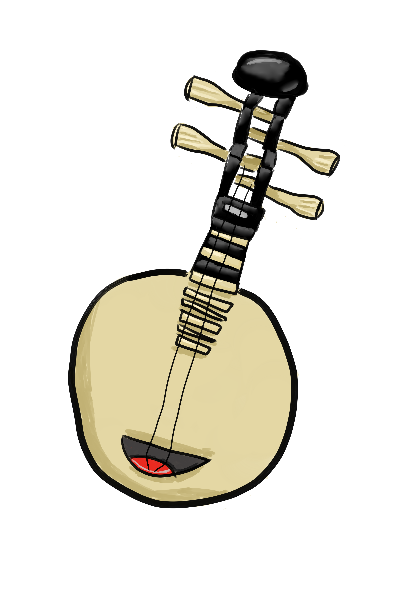
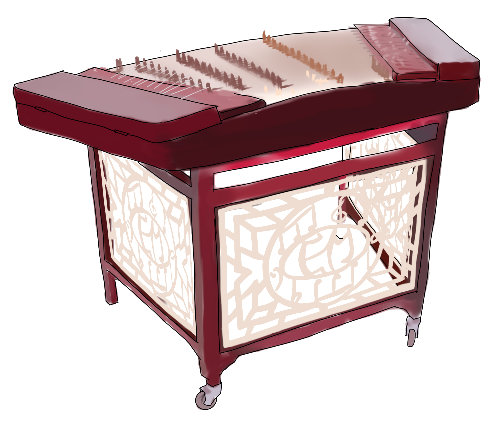

古琴音域寬廣，音色深沉，餘音悠遠。
初為五弦，漢朝起定製為七弦，亦為禮器和樂律法器。
古琴音色清、微、淡、遠，較不易合奏，目前較常見的是與琴簫合奏。
琴在全部音域範圍內音色良好，既能保持均勻，又能形成對比。有散音、泛音和按音三種音色。
琴長約三尺六寸五分，寬約六寸，琴體厚約二寸，由琴體和琴弦構成。琴弦共有七根，從外向內、從低到高，為一弦至七弦。
琴身材質是影響琴音色的首要因素，一般為桐木或杉木製面板，梓木或楠木制底板。弦則使用在豎琴弦的基礎上研製成功尼龍鋼絲弦。
外形類似古琴和箏。
瑟有25根弦，每弦有一柱。
瑟的琴箱為平臥的中空長方形，面微隆起。琴箱一般為整木製做，下有底板。有的時候琴箱側面和底面有出音孔。在琴箱表面，首段有一個較長的「岳山」，尾端有三個短岳山和四個枘，用來固定琴弦。一般的瑟有25根絲製的弦，平行琴體排列。每弦下有一可移動的柱，用來調音。
中等的瑟長度為100-160厘米，以上稱為大瑟，以下稱為小瑟。
瑟的音質飽滿，高音清脆、中音明亮、低音渾厚。其音域五聲調式可覆蓋五個八度。可以獨奏或合奏，或者用來伴奏歌唱，古代常與古琴或笙合奏。
古箏在唐朝初年由擊弦樂器轉變為撥弦樂器，並發展至13弦，接近現代古箏芻形。
箏體為木製空盒，呈扁長方形，面版有弧度突出。弦兩端搭在山口上，右山口程S形，右岳山為平直。左側為箏尾，或稱鳳尾，有弦釘以固定琴弦，右側有螺絲釘，可以調節弦張力來控制音高；中間有稱為雁柱的琴碼支撐琴弦，移動琴馬也可調音。
弦數因地域流派不一，最常見為21弦箏，另有16弦箏、26弦箏等，因流派不同而有尼龍鋼弦、鋼弦、絲弦等。
高音弦最靠近彈奏者，低音弦在最外，由內至外稱1弦至21弦。21弦箏通常按照D大調五聲音階定弦，過左手在琴碼左方按弦方可得到升音；在無調式樂曲中，則是透過特定音階設定達到不同特殊曲風的目的。
有流派主張戴假甲，有流派主張不戴假甲。現在一般彈古箏者戴著假甲，通常由玳瑁、尼龍、塑膠等製成，由膠帶纏繞黏固定於第1指節。
東亞傳統彈撥樂器，又稱「批把」，是騎在馬上彈奏的樂器，向前彈出稱做「批」，向後挑進稱做「把」，根據它演奏的特點而命名為「批把」。
最初的琵琶的形制跟現代琵琶不同，最主要的差別在於古代琵琶是圓形的，不同於現代梨形的琵琶。
有寬廣的音域，合奏時常音區有三個八度，其音色變化多樣，表現力和演奏技巧豐富。低音區厚實粗獷，中音區清秀柔美，高音區清脆明亮。故琵琶能演奏快速的樂句，表達歡樂愉快的氣氛，而且善於演繹幽靜典雅的旋律。
演奏時用右手手指甲或纏上「假甲」撥動弦線發出聲音。
又名柳葉琴、土琵琶、小琵琶、金剛腿。
近年成為民族樂團的高音樂器，開始出現獨奏曲和協奏曲。
柳琴外形像琵琶但略小。原為兩弦、七品的中音樂器，二十世紀五十年代中國民族管弦樂團對柳琴進行改革，改革後柳琴張弦四根，共有廿九品，音域約有四個八度。
樂團中是彈撥樂器的高音樂器，穿透力強，不易被其它樂器所掩蓋，常用來演奏高音區的主旋律，有時也演奏華麗、技巧性高的華彩樂段。它既適於演奏歡快、對比強烈、節奏鮮明、富有彈性和活潑的曲調，也適於演奏優美、抒情的旋律。
彈撥樂器，傳為阮所演變而成。
琴頸短，圓形音箱為木製，有8角形，在面背板中間橫置2音樑，音樑中間有2音柱。張4根弦，通常是5度定弦，演奏時左手按弦，右手持撥子彈奏，音域約2個8度。
音量較小，音色清脆柔和，適合抒情性的說唱，可以烘託故事的氣氛，多用於戲曲、曲藝和歌舞伴奏，也用於合奏。
有南月琴與北月琴兩種。北月琴為四條弦，短柄，圓形音箱，音色尖細，音域較高，音色音域類似柳琴；台灣民間較常見的屬南月琴，兩條弦，長柄，圓形音箱，沒有音窗，是台灣歌仔戲、歌仔說唱、民謠說唱重要的特色樂器。
古稱「秦琵琶」。
由琴頭、音箱、琴弦所組成，演奏時可使用撥子或佩戴「假甲」彈奏。阮由古代的八個品位，發展至現在的四弦二十四品位，並有小阮、中阮、大阮和低阮系列。
音色圓滑豐厚，中音區音色較佳，低音區音色渾厚，高音區較為明亮，由於共鳴箱較大，因此它的餘音在中、低音區較長。
是樂隊主要的中音和次中音彈撥樂器，擅長表現愉快活潑的氣氛，也宜演奏柔和的旋律，是樂團合奏、重奏、伴奏中不可缺少的樂器。
分臥式和豎式及鳳首箜篌三種。臥箜篌平放橫彈似瑟，又稱箜篌瑟。
豎頭箜篌，又名胡箜篌，箜篌高三尺許．形如半邊木梳，弦數因樂器大小而不同，最少的5根弦，最多的25根弦。
唐代以後的箜篌專指豎箜篌。琴弦一般系在敞開的框架上，用手指撥彈。箜篌與琵琶、五絃、箏合稱隋唐俗樂中的絲弦。
鳳首箜篌以琴頭飾有鳳首而得名。歷史悠久，造型優美，裝飾華麗，音色柔潤。
稱洋琴、打琴、敲琴、扇面琴、蝙蝠琴、蝴蝶琴等。
是中國民族音樂中，一種兼具打擊樂器及弦樂器特點的樂器，但在編制上仍被歸類為「彈撥樂器」。
分大小揚琴：小揚琴，兩橋式，長期用於說唱音樂的伴奏；大揚琴，兩橋式十二平均律律呂式大洋琴，為兩橋間採半音調絃法，有高音、低音兩種。
以擊弦發聲，上有100多條弦，音箱木質梯形，以堅木為音箱，以桐木為面板，上張若幹根鋼絲弦，可以奏兩組以上的音，由雙手持「琴竹」擊奏。。音色清脆、嘹亮，可獨奏、伴奏和合奏。
琴竹亦稱琴筧、竹鍵等，以具彈性的竹製作，為擊弦工具。尖端用來撥弦，可發出清脆的音。
張3根弦，故名「三弦」。
多用於伴奏民間說唱、曲藝及戲曲音樂，隨幵器樂發展和樂器改革，三弦已經成為具有特色的獨奏樂器，更被大小樂團廣泛使用。
由琴頭、琴桿、鼓頭、琴弦組成。
有大、小兩種。大三弦流行於北方，多用於伴奏、合奏和獨奏，一般由右手大拇指和食指纏上「假指甲」彈奏；小三弦則流行於南方，多用撥片彈奏。
音色獨特、鏗鏘有力，擅長演繹有強烈地方風格和富戲劇性的旋律，適合在熱烈歡樂的氣氛中擔當伴奏的角色，然而音色較難和其他樂器融和，故在樂隊中一般多用作特色樂器使用。